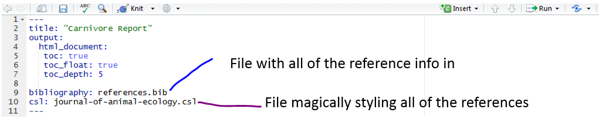

I’m fairly new to the carpentries so I wasn’t quite sure what to expect from attending Carpentry Connect 2019 but I can tell you that it was probably the best workshop I’ve ever been to.
From the very first keynote given by Tracy Teal I knew I was in for a treat. She stressed the importance of the work done by the carpentries, how through the enthusiasm of instructors the learners not only leave workshops feeling confident but that through their focus on continued learning that feeling stays with them.
The recurring theme throughout all of the keynotes was one of positivity, encouraging learners to grow and encouraging instructors to work together, build confidence and perhaps most importantly to look after themselves. From Mine Centinkaya-Rundel telling us to let our students eat cake to Lex Nederbragt telling us all that we are good enough!
The breakout sessions provided a refreshing mix of collaborative discussions, how to grow communities or ways to improve diversity, as well as hands on sessions, from using git and GitHub to learning binder. These sessions were so good I think I’ll struggle to go back to an academic conference and sit through a whole day of talks!
Possibly the best thing about the event (which was so smoothly run thanks to all the hard work from a wonderful organising team) was the atmosphere. Everyone was so welcoming and keen to meet new people and engage it soon felt like talking to friends that you had known for weeks rather than days.
As I’ve come to expect from SSI events there was also a great focus on environmental sustainability as well. Reusable lanyards and a reusable cup raffle encouraged all attendees to take part in thinking about their environmental choices. The host space ‘The Hive@ was clearly a considered choice in this respect, not only were the food and drinks delicious but there was not a single-use cup or plastic bottle in sight!
All in all my experience was overwhelmingly positive, I came home feeling like I had learned a whole heap of new things that I can’t wait to implement in my teaching and I also felt like I had made some good friends that I can continue to work with and learn from. Here’s looking forward to Carpentry connect 2020!
